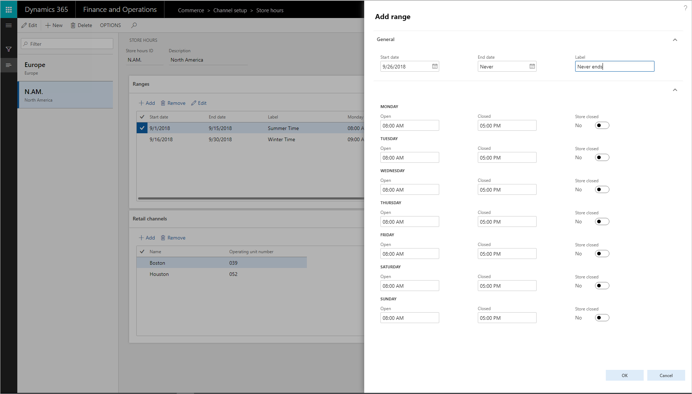
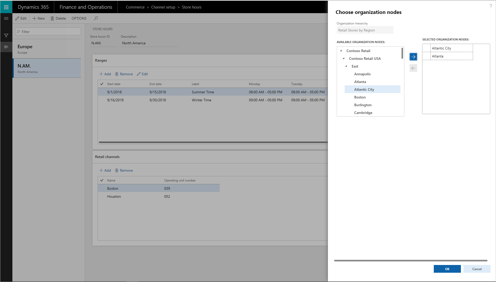

Erstellen und Aktualisieren von Geschäftszeiten
Important
Dynamics 365 for Finance and Operations hat sich zu speziell entwickelten Anwendungen entwickelt, mit denen Sie bestimmte Geschäftsfunktionen verwalten können. Weitere Informationen zu diesen Änderungen finden Sie im Dynamics 365-Lizenzierungshandbuch.
Übersicht
Von einem einzigen Ort aus können Einzelhändler die Geschäftszeiten für verschiedene Filialen über geografische Regionen hinweg anlegen, pflegen und verwalten. Die Geschäftszeiten können dann an POS-Terminals angezeigt werden. Auf diese Weise können die Kassierer die Ladenöffnungszeiten mit den Kunden teilen und den Käufern, die an Beständen in anderen Filialen interessiert sind, besser helfen. Die Geschäftszeiten können auch auf Belegen gedruckt werden, falls der Kunde später in die Filiale zurückkehren möchte.
Mehrere Geschäftszeiten können über verschiedene Kanäle konfiguriert werden. Zu diesen Kanälen gehören Filialen, Call Center, mobile Geräte und E-Commerce-Sites.
Wenn ein Kunde einen Abholauftrag für eine andere Filiale hat, kann der Kassierer einen Termin auswählen, an dem die Abholung in dieser Filiale verfügbar sein wird. Das Store Lookup liefert einen Verweis auf die Daten und Zeiten des Ladens. Der Kassierer kann ein Datum und einen Ort auswählen und einen Abholbeleg mit den Geschäftszeiten ausdrucken.
Diese Funktionalität ist in Microsoft Dynamics 365 Retail ab Version 8.1.2 verfügbar.
Konfigurieren der Geschäftszeiten
Führen Sie diese Schritte aus, um die Geschäftszeiten zu konfigurieren.
Gehen Sie zu Retail und Commerce > Kanaleinrichtung > Öffnungszeiten.
Wählen Sie Neu, um eine neue Geschäftszeitenvorlage zu erstellen. Um eine vorhandene Vorlage zu verwenden, wählen Sie die Vorlage im linken Bereich aus.
Definieren Sie im Dialogfenster Hinzufügen Bereich den Datumsbereich, die Geschäftszeiten und eventuell erforderliche Feiertage.
- Wenn sich die Geschäftszeiten nicht ändern, wählen Sie Nie endet im Feld Enddatum.
- Wenn die Geschäftszeiten für einen bestimmten Monat, eine bestimmte Woche oder einen bestimmten Tag gelten, setzen Sie die entsprechenden Daten in den Feldern Startdatum und Enddatum.
Note
Sie können mehrere Vorlagen erstellen, deren Start- und Enddatum sich überschneiden. So können Sie z.B. für Filialen in verschiedenen Zeitzonen Geschäftszeiten definieren.

Ordnen Sie die Ladenöffnungsvorlage den Filialen zu, in denen sie verwendet werden soll. Wählen Sie im Dialogfenster Organisationsknoten auswählen die Filialen, Regionen und Organisationen aus, denen die Vorlage zugeordnet werden soll.
- Jeder Filiale kann nur eine Ladenöffnungsvorlage zugeordnet werden.
- Verwenden Sie die Pfeiltasten, um Filialen, Regionen oder Organisationen auszuwählen. Der Kalender steht den Filialen oder Filialgruppen zur Verfügung und ist am POS als Referenz sichtbar.

Führen Sie auf der Seite Verteilungsplan die Jobs 1070 und 1090 aus, um die Geschäftszeiten für die Kasse verfügbar zu machen.
Hinzufügen von Geschäftszeiten zu gedruckten Belegen
Führen Sie diese Schritte aus, um den gedruckten Kassenbelegen Geschäftszeiten hinzuzufügen.
- Öffnen Sie den Beleg-Designer.
- Wählen Sie Fußzeile in der linken unteren Ecke.
- Ziehen Sie das Element Geschäftszeiten aus dem linken Bereich in die Fußzeile am unteren Rand der Belegablage.
- Sie können die Standardbeschriftung auf dem Element Geschäftszeiten beliebig bearbeiten.
- Speichern Sie den Beleg und schließen Sie den Belegdesigner.
- Führen Sie auf der Seite Verteilungsplan die Jobs 1070 und 1090 aus.
- Melden Sie sich am POS an.
- Schließen Sie einen Verkauf ab und wählen Sie, um eine Quittung zu drucken.
Die Bons enthalten nun auch die Geschäftszeiten. Wenn in der Vorlage Feiertage enthalten waren, werden diese auf dem Beleg angezeigt.